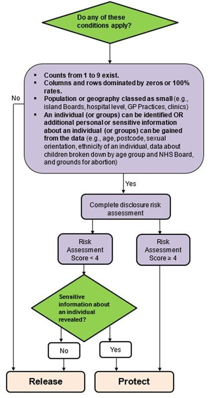

Chapter 6 Sharing Data
6.1 Producing Outputs
The best practice is to produce aggregate outputs rather than patient-identifiable outputs. This will of course be driven by your customer’s requirements.
Please always adhere to Statistical Disclosure Control and conduct a Risk Assessment of the data you are releasing.
You must always comply with National Statistics Code of Practice.
If you are releasing data to your customer which is not nationally published or available, please indicate in your covering email that this is for management information only (i.e. it is not be shared or published by the customer). Learn more about Management Information here
If you are unsure about what you can and cannot release / publish, please seek advice from your line manager and/or other experienced analysts, or contact the Statistical Governance Team (phs.statsgov@phs.scot).
6.2 Statistical Disclosure Control
Statistical disclosure control is a set of methods we apply, usually restricting or reducing the detail of data being released, in order to reduce the risk of personal identifiable information about data subjects. This is important to consider in our work within LIST, especially in the instance that some of our outputs may end up in the public domain.
In the instance where you are releasing aggregated information about individuals, you should consider applying SDC in the instance where:
The output is to be released into the public domain
The output is not intended for the public domain, but risks around small numbers and/or data that is not yet published can be mitigated
- If these risks cannot be mitigated then a DRL form may be required, or the output can be released as Management Information Only if there isn’t a significant disclosure risk
The SDC Flowchart and risk assessment form available on The Spark is helpful to determine what courses of action you might take if you intend to apply SDC to your output.

The full SDC Protocol document also contains some helpful of examples of how you might redesign your output to remove small numbers.
6.3 Management Information
Sometimes we might be providing our customers with data which is not suitable for publication, such as aggregated data with small numbers which can’t be aggregated further due to the customers’ requirements for the data. In such cases as these we would provide the output as Management Information Only. By marking the output as MI only we are reducing the risk of disclosure by the onward distribution of, or inadvertent release into the public domain of, the data provided.
The MI text has been updated in the latest version of the Statistical Disclosure Protocol, available on The Spark, which you can see below.
- In addition to this, we recommend including a Management Information Only statement in the email in which you send the output to your customer. We also recommend reiterating verbally in any meetings with customers that the output is for Management Information purposes only.
Label each table/chart as “Management Information only, not for onward distribution”, or at the top of the output as a title.
The standard text below should be added as a footnote to each table/chart:
- This information has been released for management information purposes only. The data have not been adjusted to protect against potential disclosure risks and may contain information which enables (perhaps with the aid of further knowledge of the topic) an individual patient or member of staff to be identified. Please ensure circulation is restricted and that patient confidentiality is not compromised. Please contact phs.statsgov@phs.scot if you have any queries around this or if there is any breach of the terms of the restricted management information.
You should highlight all Management Information text in red to draw attention to the statement.
When releasing unpublished data you might use a slightly different statement, such as the one below which is used in the MSG reports:
- Data Release Note: These reports are released for management purposes only and contain previously unpublished data. Please treat the material and any indication of the results as restricted until general release.
- Please note that some data in the tables below may be affected by data completeness issues, particularly in recent months. See the Completeness tab for further information.
You can find information about MI within the Statistical disclosure control protocol document on The Spark.
What do I do if I release data as Management Information to a local partner, but then they publish it?
LIST have responsibility to ensure that when we release management information to a HSCP that it is clearly labelled with the management information text on the output itself and also the email used to disseminate the output. See the PHS Statistical Disclosure Protocol for more details on this guidance.
HSCPs have a responsibility to treat this information appropriately and follow the PHS guidance on the use of management information. If this information is published then the onus is on the HSCP to ensure they follow local protocols re how they should treat this, and they should also inform LIST this has happened.
There may be local reasons why a decision to publish was made, but it may also be that a mistake has occurred. If staff are ever concerned they should raise this with their line manager in the first instance.
6.4 Sending Data Securely
Outside of PHS staff, the only individuals we can send confidential data to are those with either:
NHS Scotland e-mail addresses (nhs.scot, nhs.scot.uk), or
Local authority e-mail addresses (councilname.gov.uk)
LIST should not be sending confidential data to any other e-mail domains, e.g. university, third sector etc.
On the occasion where our customer has a university e-mail address in addition to one of our trusted, secure e-mail addresses (such as an NHS Scotland e-mail address), we must ensure we send data to their secure e-mail and not their university e-mail address.
6.4.1 Sending by Secure File Transfer
The best, most secure way to send confidential data to our customers is via secure file transfer, using either:
Globalscape, or
SWAN
These are trusted tools which enable safe and secure transfer of data, as well as enabling data transfer of files which are too large for e-mail attachments. You can apply for access to an account and find out more details on Service Now.
6.4.2 Sending by E-mail Transfer
There may be instances where it is more appropriate to send confidential data via e-mail, which is an acceptable way to transfer confidential data provided you follow these steps to ensure the transfer of this data is as safe and secure as possible:
Do not attach the data to the e-mail until you have completed all these steps to ensure that you do not accidentally send the data in an unsafe manner.
Ensure that you have the correct e-mail address, as there may be more than one person in the organisation with the same name. Ensure that you are not using group/circulation lists and that you are only e-mailing the named individuals on the DRL form who are entitled to access the data - the recipients should be referenced in section 7 of the DRLF, although the individuals may not be named so you should check with the applicant of the DRLF.
If in doubt, send a test e-mail to the customer beforehand to ensure it is the correct recipient for the data, and only send the data onwards once you’ve received that confirmation.
We also recommend you avoid the use of bcc.
Draft the e-mail to the customer, ensuring to include the following standard texts within the e-mail:
Management Information Text must be included in the email, as well as on the attached file containing the patient level data. Read more about Management Information text here
You should also include this text to instruct the customer to delete the email:
Please ensure that as soon as you have downloaded this attachment and saved it in a secure area, that you delete this e-mail from your inbox and your ‘deleted items’ folder to reduce the risk of data duplication.
This is because when we send data as an attachment within an e-mail, it is copied over and over again and multiple versions of the data are saved within various individuals’ outlook storage, as well as copies stored on secure areas. We recommend you discuss this with your customer beforehand and ensure that they understand the need to not retain data within their e-mail inbox for longer than necessary.
We also recommend that LIST analysts also delete these e-mails from their own Outlook as soon as they are no longer required.
Implement at least one of the following options:
Add the text ‘[secure]’ to the start of the subject line of the e-mail, or
Encrypt the e-mail, which is available within the Options menu of the Outlook message window
This adds a layer of encryption to the e-mail and an added layer of security to the data. We would recommend using the [secure] function, however, as we found that when we tested the Encryption method it can lead to an error message for council e-mail addresses. This is intended to be addressed in future updates to Outlook.
What about password protection?
Many in LIST opt to apply password protection to the data file, and sending the password within a separate e-mail, either within the e-mail text or as an attached ‘read me’ file. This is acceptable to do, however you should consider that if the individuals e-mail account is hacked it is only too easy for the hacker to obtain the password if it’s merely held in a secondary e-mail. Overall, double checking who you are sending the e-mail to and applying encryption to the e-mail, as well as encouraging our customers to delete the e-mails once they’ve obtained the data attachments, are more effective at reducing overall risk of sending confidential data via e-mail.
Should I send the data in two parts, with an anonymous link for the CHI number?
This is an option you may consider; however, it relies on the customer being able to successfully merge the documents properly, therefore it’s not something we would generally recommend. If you have followed the recommended steps to send the data securely this should not be necessary.
What other options do I have when sending confidential data via secure e-mail?
In addition to the recommend steps as detailed above, there are a few other options available within Outlook which you may not be aware of:
You can restrict the e-mail to prevent recipients from forwarding the e-mail onwards.
Add a delay to the e-mail to schedule it to send at a later time.
Both options are available in the options menu within Outlook.
What about when sending non-confidential data?
If the data is not confidential, then it is appropriate to send as an e-mail attachment without the above additional security steps, unless the file size is too large to send via e-mail, in which case you should consider using Globalscape/SWAN to enable file transfer.